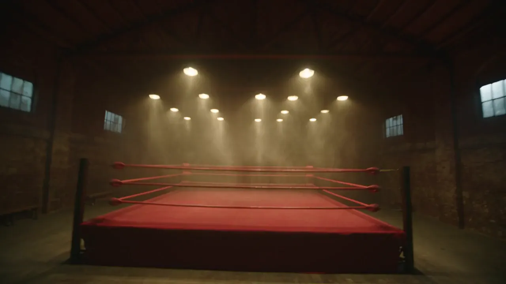

Box pro
každého,
kdo přijde
Od prvního tréninku po reprezentační dres. Moravská Ostrava, ZŠ Nádražní 117.
Nemusíš být v kondici. Musíš jen přijít.
Většina lidí u nás nikdy nezápasila a nechce. Chodí, protože je to nejtvrdší kardio, jaké existuje, a protože se u pytle vypne hlava.
První trénink 140 Kč. Rukavice a bandáže půjčíme.
Trénujeme pondělí, středu a pátek.
Kondiční box · Akademie pro děti · Mládež · Výkonnostní box
Permanentka 10 vstupů 1 200 Kč. Žádná smlouva, žádný vstupní poplatek.
Trenéři, co vedou i národní tým.
Kondičku ti vede mistr republiky. Náš trenér SCM vede juniorskou reprezentaci ČR. Předseda klubu sedí v trenérské radě České boxerské asociace.
Stejní lidé, co připravují reprezentanty, tě naučí první direkt.
Sportovní centrum mládeže.
Ten statut si klub nedá sám — uděluje ho asociace klubům, které umí vychovat reprezentanta. Naši boxeři jezdí na Národní ligu, na turnaje do Polska a na mistrovství Evropy.
Ať přijdeš zhubnout nebo vyhrávat, trénuješ v klubu, který na to má.